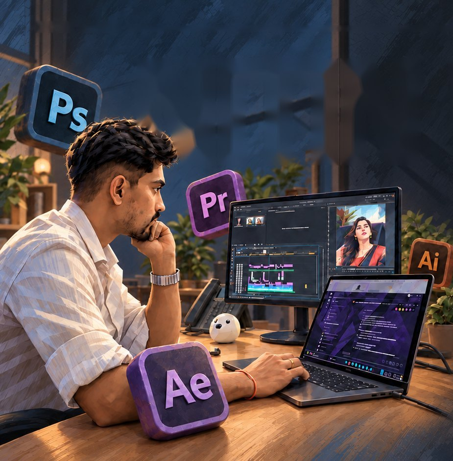

I’m Nitin Wagh, a video editor with 3+ years of experience across reels, long-form videos, SaaS demos and cinematic content. Working in different creative environments has taught me versatility.
Across high-retention short-form reels, narrative long-form videos, crisp SaaS product walkthroughs, and mood-led cinematic cuts, I combine AI-assisted speed with human creative judgment.